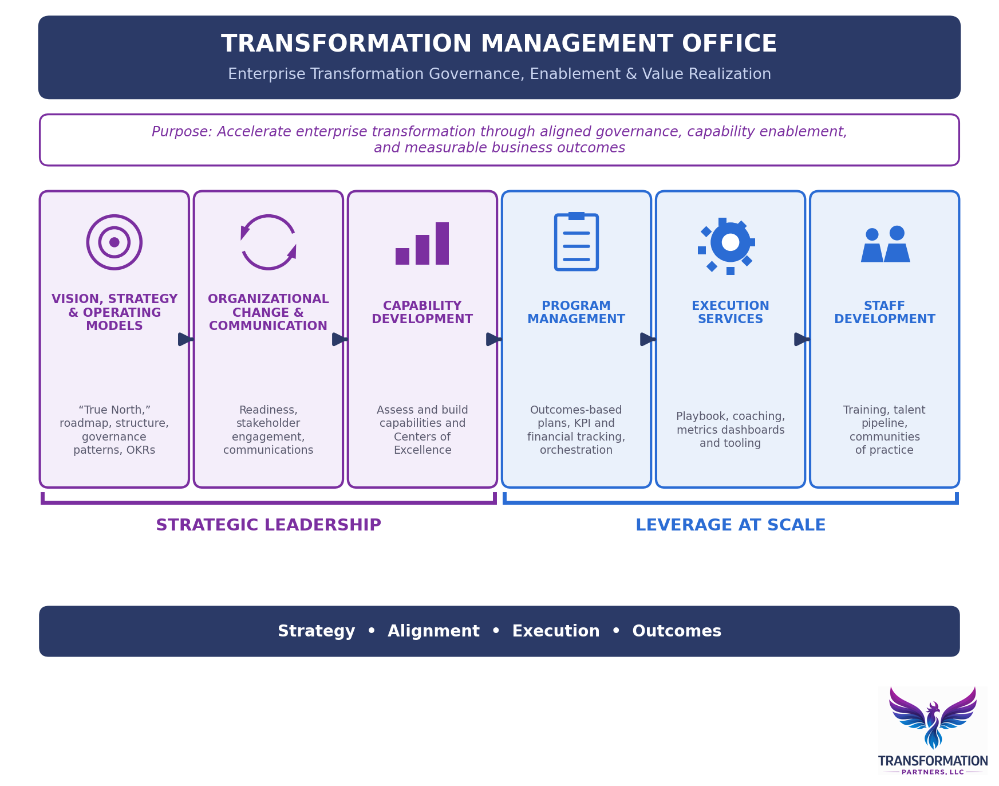
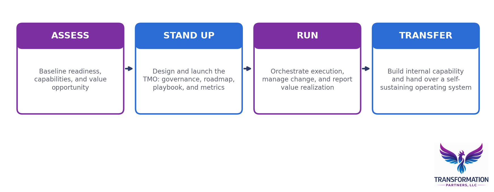

Services · Transformation Management Office
The Transformation Management Office
Enterprise transformation governance, enablement, and value realization. One vision, one roadmap, one governance model, and one view of value realized.
Schedule a ConversationWhy a TMO
Transformation Needs an Operating System, Not a Status Report.
Most transformations do not fail for lack of vision or investment. They fail in the space between strategy and delivery: fragmented governance, unclear priorities, capability gaps, and change that outpaces the organization's ability to absorb it. A Transformation Management Office (TMO) closes that gap.
Transformation Partners designs, stands up, and leads TMOs that give executives a single point of orchestration for the entire transformation: one vision, one roadmap, one governance model, and one view of value realized. The TMO is not an administrative PMO that tracks status. It is the operating system of the transformation, accountable for aligning investment to strategy, building the capabilities the future state requires, and measuring outcomes that matter to the business.
The TMO Framework
Six Functions. One Managed System.
Our TMO model integrates six functions that most organizations run separately, if at all. Strategic Leadership functions set direction and align the organization, while Leverage at Scale functions industrialize execution. Operated together, they turn transformation from a portfolio of disconnected initiatives into a managed, measurable system.

Strategic Leadership
Set direction, align the organization, and build the capabilities the strategy requires. These functions ensure the transformation is pointed at the right outcomes before execution scales.
Vision, Strategy & Operating Models
Create and maintain the end-state vision and transformation roadmap to maximize the attainment of business value.
- Define the vision, mission, values, and business drivers that align the organization to a "True North"
- Develop the transformation roadmap and enablement plan
- Define organizational structure and governance patterns that maximize team autonomy and minimize orchestration overhead
- Define business and organizational OKRs; align team structures around products and services
- Prioritize transformation investment, validate readiness, and support portfolio funding and staffing decisions
Organizational Change & Communication
Bring the organization along: readiness, engagement, and communication as managed disciplines.
- Assess readiness and plan organizational change: stakeholder analysis, risk and readiness assessment, change strategy and plan
- Enterprise change impact assessment with role clarity, structure, and accountabilities
- Leadership and employee engagement plans with OCM metrics and measurement
- Communication planning, forums, live events, and transformation branding
Capability Development
Build the capabilities the strategy requires, where the organization needs them most.
- Identify core, governance, and support capabilities required to deliver goods and services
- Assess capability performance against vision, strategy, mission, and goals
- Improve or develop capabilities through targeted consulting, training, and Centers of Excellence
Leverage at Scale
Orchestrate execution and make the transformation repeatable, measurable, and self-sustaining. These functions convert strategic intent into delivered, institutionalized change.
Program Management
Provide orchestration and support for transformation planning, budgeting, and execution.
- Transformation planning and readiness services, from initiation through kickoff
- Outcomes-based plans, not activity-based schedules
- KPI and financial tracking with transparent progress reporting to the executive team
- Targeted transformation consulting where execution needs reinforcement
Execution Services
Scalable tools and services that make the transformation repeatable, not personality-dependent.
- The Transformation Playbook: tools, templates, and tutorials that institutionalize how the work gets done
- Team enablement, coach-guided assessments, and staff coaching
- Metrics management: tooling, configuration, and dashboards tracking progress against OKRs and success criteria
Staff Development
Instill transformation knowledge, adoption, and continuity in the organization.
- Skill-based training and curriculum services, including executive education and managing with metrics
- Talent pipeline services: role definitions, recruiting, onboarding, and shadowing for transformation roles
- Communities of practice that sustain learning after the engagement ends
How We Engage
Stand It Up. Run It. Hand It Over.
Every engagement is designed to make our role temporary. We stand up the capability, run it alongside your leaders, and transfer it, leaving behind an operating system your organization owns.
Assess
We baseline where you are: transformation readiness, capability maturity, governance effectiveness, and the size of the value opportunity. The output is a prioritized roadmap and an honest view of what it will take.
Stand Up
We design and launch the TMO: decision structures, funding alignment, the transformation roadmap, the playbook, and the KPI framework, tailored to your operating model rather than imposed on it.
Run
We orchestrate execution: chairing the TMO, managing risks and dependencies, driving organizational change, and reporting value realization directly to the steering committee and executive sponsors.
Transfer
We build your people into the roles we hold, transfer the playbook and tooling, and step back as the TMO becomes a self-sustaining internal capability.

Track Record
Proven at Enterprise Scale.
Risks & Dependencies Mitigated
Chaired the TMO for a multi-workstream ERP and financial transformation, mitigating over 90% of open risks and dependencies.
Revenue Stream Covered
Institutionalized product management discipline across 37+ investment, portfolio, product, and delivery teams.
Savings Per Site
Redesigned governance for a $3B capital program that delivered $10M in savings per site.
Ready to Talk About Your Transformation?
Let's have a direct conversation about what's actually happening and whether a TMO is the right way to fix it.
Schedule a Conversation